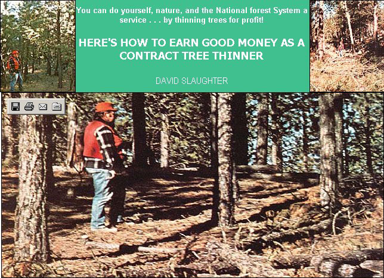

Clean mountain air, plenty of invigorating exercise, freedom to come and go as I choose, and a chance to perform ecologically important work for decent pay . . . I enjoy all this as an independent tree thinner. And, with a little advance planning, you can too.
Each year, the U.S. Forest Service lets out hundreds of contracts for the thinning of thousands of acres of National Forest land . . . land that must be thinned to [1] allow more rapid growth of desirable tree species, [2] ensure habitability of the area for deer and other wildlife, and/or [3] increase the amount of runoff from a watershed area. Normally, Nature would perform this "thinning" herself with wildfires (touched off by lightning and other natural phenomena) . . . but because such blazes have the potential to do great harm in addition to the good they accomplish-the Forest Service does everything in its power to prevent forest fires. And, as a result, the Service also pays people like you and me to do Nature's work of tree thinning for her.
I find the pay quite good. My very first timber-thinning stint lasted seven months and paid me a gross income of nearly $9,000 . . . of which I netted close to $6,000 (after I'd deducted transportation costs, chain saw maintenance, and other expenses). I worked an average of less than 40 hours per week during that period, and-best of all- I called the shots . . . no "boss" told me what to do, or when to work.
If you'd like to give tree thinning a try, the first thing you should do is contact the District Ranger assigned to the National Forest in which you wish to work. (You can obtain a list of -National Forest headquarters from your Regional Forester. See the sidebar that accompanies this article.) He'll add your name and address to his list of prospective contractors, answer any questions you may have, and-in a few weeks-send you a formal request for bids, or "solicitation".
The solicitation package will include instructions for submitting your bid, plus maps and detailed specifications of the work to be done. Among other useful facts, the solicitation package will tell you:
[1] The name, location, and total acreage of the area to be thinned. Parcels vary in size from a few acres to several hundred. Thus, if you're new to tree thinning you may want to try for a small contract-one that you can work on part time-first, so that you can see if you like the job.
[2] The amount of time you'll be given to complete the contract. This can' range from one month to two years, depending on the size of the tract and the Forest Service's own schedule requirements.
[3] The diameter and height of the trees to be cut. Although this will (again) vary with each contract, you'll seldom be asked to fell trees more than seven inches in diameter.
[4] The average spacing between "leave" trees (the trees you'll leave standing). Normally, this distance is in the range of ten to twenty feet. Note that the greater the required spacing is, the higher your bid will have to be . . . because you'll be required to cut down more trees.
[5] How to dispose of the slash. ("Slash" refers to the limbs and boles of the felled trees.) As a rule, you'll be required to cut all branches down and scatter the slash so that nothing stands up more than a prescribed height (24 inches, say).
Thinning specifications vary from tract to tract-and from one part of the country to the next-depending on local conditions (the type of forest, climate, degree of fire hazard, and so forth).
Sometimes you'll be given salvage rights to the timber you cut. This can mean a good supplementary income (from the sale of firewood, logs for construction, poles, fenceposts, etc.) if you have a serviceable truck and are able to skid the usable slash out to the vehicle. (A mule, horse, or small tractor would come in handy for this.) You must be able to prove to the Forest Service, however, that your main source of income is tree thinning-and not lumber or firewood sales-if you intend to make use of your "salvage rights".
Several weeks before the bidding deadline, your District Ranger will conduct a guided tour of the work area(s) and answer bidders' questions. After the tour, prospective contractors may return to the tract(s) of land on their own at any time-right up until the last day of bidding-to get a better idea of what the land is like. (And you definitely should come back for a "second look"-with an experienced thinner at your side-if you're new to this kind of work.)
As you examine the thinning area, ask yourself: How thick is the forest's "understory" (the ground cover of shrubs, forbs, and grasses)? How numerous are the "cull" trees (that is, the trees you'll have to cut down)? Does the area have easy access? Obviously, if the understory is so dense with thorny shrubs that you can't walk a straight line . . . and the work site is heavily populated with cull trees . . . and the parcel can only be reached by pack mule . . . you'll have to adjust your bid upwards.
How much should you bid? You could -if you're desperate for help-ask your forester. (While he cannot reveal the "government estimate" for doing a particular thinning job, he can -and usually will tell you how much money has been paid to contractors for similar jobs.) It's been my experience that bids range from $10 to $100 per acre.
When you've decided on your bid, simply fill out the "Solicitation, Offer, and Award" form in your solicitation package, seal the bid according to the instructions provided, and mail it to the Contracting Officer in care of the appropriate Forest Service office. If your bid is accepted, you'll receive a "Notice to Proceed" in the mail . . . after which you have ten days to begin your thinning operation.
The Forest Service may allow you to live right on the thinning site-in a small trailer, camper, tent, or other temporary shelter-while you're performing your work . . . in which case they'll issue you a fire permit and ask you to [1] observe fire regulations and [2] keep the area clean. The money you can save in transportation costs and rent-and the rapport you can achieve with nature-make on-site living something you'll want to consider carefully. Bear in mind, though, that permission to live "on site" can only be granted to you after you've received your contract . . . not before.
The single most important ingredient for success in this business is a sturdily constructed, well maintained chain saw. And I emphasize the words sturdilyconstructed. Many people (myself included) are tempted to save a few bucks by buying an inexpensive saw . . . one that-chances are-is too small and/or fragile for contract thinning. You might as well throw your money away as purchase one of these machines, however.
What you want is a heavy-duty brand name chain saw . . . one that can be serviced nearby, if the occasion arises (and-after months of heavy cutting-it just might). That means you should be prepared to spend $300 or more on this one piece of equipment. A lot of money, perhaps . . . but not as much as you might spend to maintain (or replace) a less-durable tool.
As they say, "You pays your money and you takes your choice."
Safety is something you should think about constantly when you're on the job. Remember that it's best-whenever possible-to have a friend along while you're "on duty", in case you're injured by a falling tree or-heaven forbid-cut by your saw. A good many safety items hard hats, chaps, quick-stop saw chains, etc.-are available (from department stores, sporting goods outlets, and the like) for you to use. Take advantage of them . . . they could save your life.
Most contracts carry a provision or clause that says something like: "The contractor shall progressively prosecute the work in a manner that will, under normal working conditions, result in completion of all work within the time specified." To see that you are indeed living up to this part of the agreement, a forester will periodically visit you in the field once you've begun work. He'll not only check on your progress, but make suggestions and answer any questions you might have. (I've found these men to be helpful and genuinely interested in my success whenever I've dealt with them.)
Occasionally, you may be prevented from executing your work in a progressive manner due to adverse weather. (During a particularly hot summer, for instance, the Forest Service may call a halt to all timber operations because of severe fire hazard. Likewise, heavy snows can put a damper on wintertime thinning activities.) If this happens, the Forest Service will extend your contract's deadline.
If-for some reason-you're incapable of fulfilling your contract after it has been awarded to you, you can sublet it. (Here, you must find another thinner who's willing to take your contract for the price you bid, and who meets with the approval of the Forest Service.) Otherwise, the Forest Service will award your contract to the next highest bidder . . . and you'll be liable for the difference between your bid and the higher one.
The Forest Service will give you a choice of several methods of payment for your work. So long as the job progresses according to schedule, you can ask to be given checks on a regular basis . . . or you can receive partial payment upon demand (if-again-your work is going smoothly). Or, you can collect your whole payment in one lump sum at the end.
Before you're paid, the forester in charge of your contract will visit your work area, estimate the number of acres completed, and determine whether or not the land has been satisfactorily thinned. (Generally speaking, you'll be required to work within a tolerance of plus or minus 15%. Say, for instance, that your contract calls for 320 trees to be left standing per acre of ground. If you leave more than 320-plus 15%-or 368-trees standing, you'll be asked to thin a few more. If you leave less than 320- minus -15%-or 272-trees in place, you'll be paid a small percentage less for your work than your bidding price.)
Once the forester sees that you've finished the job, he'll make out his report . . . and you'll receive your final check in the mail three to five weeks later.
If you're working in a group-as many thinners do-your group will receive just one payment from the Forest Service, which must then be divided up among the partners. Usually, this is done on the basis of how many man- or woman-hours (yes, female thinners do exist) each member has invested in the thinning operation.
As a contract thinner you'll not only have an income, but expenses, too: transportation, equipment repair, supplies, wages (if you hire anyone to help you), etc. Be sure to keep accurate records of all these costs. For one thing, they'll constitute valid-and very valuable-deductions at income tax time, since for tax purposes you'll be considered "self-employed". Just as importantly, however, these records will enable you to estimate costs more accurately in the future, and thus allow you to bid more competitively on future contracts.
Tree thinning is a healthful, environmentally important, and rewarding (in many more ways than I've been able to present here) occupation . . . one that I don't intend to give up soon. I hope that-after reading this article-you'll want to investigate contract thinning further, and (perhaps) get started in a line of work that allows you to [1] get close-really close-to Mother Nature . . . and [2] make good money, too.
See you in the woods!
|
 PHOTOS BY C. E. FERWEDA In the top left photo, author David Slaughter surveys an overgrown section of national forest prior to thinning. Top right: thinning has begun (although the ""slash"" has yet to be cut and scattered). Above: The author stands in a properly thinned area of forest. Trees are spaced ten to twenty feet apart, dead limbs and boles have been disposed of in an acceptable manner. |
|
|